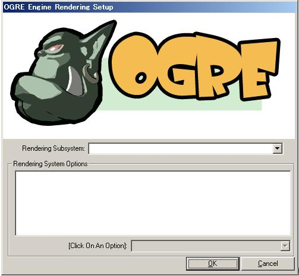
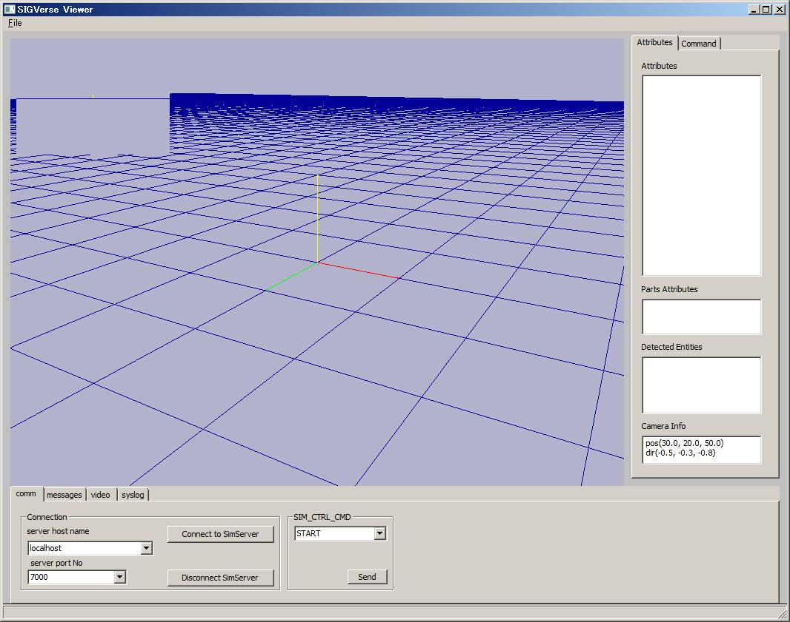
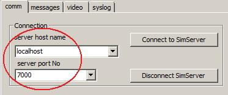

ビューアの起動
SIGViewer.exeを実行します．
初回起動時のみ、以下のダイアログが表示されます．

これは、レンダリングに使うグラフィックス環境の設定を行うダイアログです． OpenGL/Direct3D9のどちらのレンダリングサブシステムを使うかを選んでください． （どちらを選んでも構いませんが、通常はOpenGLを選べばいいと思います）
（注） この設定はogre.cfgに保存されます．次回起動したときはこの設定が使われますので、2回目からはこのダイアログは開きません．
もし設定を変えたい場合は、ogre.cfgファイルを消してから、再度SIGViewer.exeを起動してください．（再び設定ダイアログが開きます）
「Ok」を押すと、設定を保存し、ビューアが起動されます．

コマンドライン起動オプション
-s hostname
シミュレーションサーバのホスト名を指定します．デフォルトではlocalhostになっています．
-p portno
シミュレーションサーバのポート番号を指定します．デフォルトでは7000番になっています．
-sp portno
サービスプロバイダとしてビューアがオープンするポート番号を指定します．デフォルトでは8000番になっています．
（例）
シミュレーションサーバがmyserver.co.jp、ポート番号を7500番とする場合は以下のように指定します．
> SIGViewer –s myserver.co.jp –p 7500
設定ファイル
startup.cfgがSIGViewer.exeと同じディレクトリにある場合、起動時にそれを設定ファイルとして読み込みます．
シミュレーションサーバのホスト名、ポート番号、その他のオプションをあらかじめ設定しておけば、起動するたびにコマンドラインオプションで指定する手間が省けます．
設定できる項目
SERVER
シミュレーションサーバのホスト名を指定します．
ホスト名は複数個指定できます．指定されたホスト名はメインウィンドウ下部のserver host nameエリアのドロップダウンリストに表示されます．
指定しない場合はlocalhostになります．
PORT
シミュレーションサーバのポート番号を指定します．
ポート番号は複数個指定できます．指定されたポート番号はメインウィンドウ下部のserver port Noエリアのドロップダウンリストに表示されます．
指定しない場合は7000番になります．
VIEWER_AS_SERVICE_PROVIDER
ビューアを、detectEntities, captureViewサービスを提供するサービスプロバイダとして動作させるかどうかを指定します．
この項目を指定しなかった場合はtrue（＝サービスプロバイダとして動作させる）になります．
SERVICE_PROVIDER_HOST
サービスプロバイダとしてサーバーに登録するIPアドレスを指定します．
コントローラがビューアにdetectEntitiesのようなサービスを依頼した場合、
ここに書かれたアドレスへ接続されます．
この項目を指定しなかった場合は、自動的にビューアを実行しているPCのホストアドレスになります．
SERVICE_PROVIDER_PORT
サービスプロバイダとしてビューアがオープンするポート番号を指定します．この項目を指定しなかった場合は8000番になります．
MAIN_CAMERA_INIT_POS
起動時のメインカメラの位置を指定します．
MAIN_CAMERA_INIT_DIR
起動時のメインカメラの視線方向を指定します．
SUB_CAMERA_NUM
サブカメラの個数を指定します．
1に設定した場合、サブウィンドウは1つだけ表示されます．
2に設定した場合、サブウィンドウは2つ表示されます．エージェントの左目からの画像が左のウィンドウに、右目のそれが右のウィンドウに表示されます．
BACK_GROUND_COLOR
メインウィンドウの背景色を指定します．
MSG_WINDOW_LIMIT_TEXT_SIZE
メッセージウィンドウに表示できる最大の文字数を指定します．0を指定すると最大値(=2GBytes)まで表示します．通常は0にしておけばよいでしょう．
SYS_MSG_WINDOW_LIMIT_TEXT_SIZE
上記と同様にシステムメッセージウィンドウの文字数を制限します．
ATTR_NAMES_TO_SHOW
画面右側の「Attribute」パネルで表示する属性名を指定します．
何も指定しない場合は，すべての属性が表示されます．
LOG_LEVEL
ビューアの実行ログファイル(SIGViewer.log)を生成するか否かのフラグです．
allの場合、ログが出力されます
noneの場合、ログは出力されません（設定ファイルの記述内容のみは出力されます）
SHOW_GROUND_GRID
床のグリッドを表示するか否かを制御します．デフォルトでは表示します．
GROUND_GRID_PLANE_SIZE
床のグリッドの幅を指定します．デフォルトでは500です．
GROUND_GRID_SIZE
床のグリッドのメッシュ間隔を指定します．デフォルトでは10です．
SHOW_AXIS_ARROW
x, y, z軸を示す矢印を表示するか否かを制御します．デフォルトでは表示します．
AXIS_ARROW_LENGTH
上記矢印の長さを指定します．デフォルトでは10です．
SHOW_DIR_ARROW
エージェントの顔、左目、右目の方向を示す矢印を表示するか否かを制御します．
顔の方向=1
左目の方向=2
右目の方向=4
です．これらの数値の和を設定します．
例えば、顔の方向のみ表示したい場合は1に設定します．左目と右目両方の方向を表示したい場合は6に設定します．
VIDEO_RECORD_RATE
ビデオ録画時のフレーム間隔をミリ秒単位で指定します．デフォルトでは500です．
VIDEO_RECORD_COMPRESS
ビデオ録画ファイル(.svd)を圧縮するか否かを制御します．デフォルト値はtrue（圧縮する）です．
また、行の先頭が#で始まる行は、コメントとみなされます．
[startup.cfgファイルの例]
# ***************************************************
#
# SIGViewer設定ファイル
#
# ***************************************************
# ------------------------------------------------
# シミュレーションサーバーのホスト名とポート番号
#
# この2つに限り、複数個のエントリを設定できる
# ------------------------------------------------
SERVER=localhost
SERVER=myserver.mycompany.co.jp
PORT=7000
PORT=7010
PORT=7020
# ---------------------------------------------------
# SIGViewerのサービスプロバイダ関連の設定
# ---------------------------------------------------
# SIGViewerをサービスプロバイダとして登録するか
VIEWER_AS_SERVICE_PROVIDER=true
# サービスを受け付けるホストアドレス
# この項目を指定しない場合は、自動的にSIGViewerを実行している
# マシンのIPアドレスになる．
#SERVICE_PROVIDER_HOST=127.0.0.1
# サービスを受け付けるポート番号
SERVICE_PROVIDER_PORT=8000
# ------------------------------------------------
# メインカメラの位置と視線方向
# ------------------------------------------------
MAIN_CAMERA_INIT_POS=(30, 20, 50)
MAIN_CAMERA_INIT_DIR=(-30, -20, -50)
# ------------------------------------------------
# サブカメラの個数（単眼=1 or 複眼=2）
# ------------------------------------------------
SUB_CAMERA_NUM=1
# ------------------------------------------------
# スクリーン背景色
# R, G, Bの色成分値(0.0以上1.0以下）で与える
# ------------------------------------------------
BACK_GROUND_COLOR=(0.7, 0.7, 0.8)
# ------------------------------------------------
# メッセージ表示領域に表示する最大文字数
#
# 0 (default) = max size (2G chars)
# ------------------------------------------------
MSG_WINDOW_LIMIT_TEXT_SIZE=0
SYS_MSG_WINDOW_LIMIT_TEXT_SIZE=0
# ------------------------------------------------
# 属性表示領域に表示する属性名
#
# 何も指定しないと、すべての属性を表示する
# ------------------------------------------------
ATTR_NAMES_TO_SHOW=(name, class, x, y, z, qw, qx, qy, qz, vpx, vpy, vpz, vvx, vvy, vvz, scalex, sca
ley, scalez, x3dCenterOfMass, visStateAttrName, switch, visual)
# ------------------------------------------------
# SIGVerseシステムログ表示レベル
#
# all ...... ログをSIGVerse.logに出力
# none ..... SIGVerse.logへのログ出力を行わない
# ------------------------------------------------
LOG_LEVEL=all
# ------------------------------------------------
# 地面グリッドの表示スイッチ
# ------------------------------------------------
SHOW_GROUND_GRID=true
# ------------------------------------------------
# 地面グリッドのサイズ
# ------------------------------------------------
GROUND_GRID_PLANE_SIZE=500
GROUND_GRID_SIZE=10
# ------------------------------------------------
# x, y, z軸矢印の表示スイッチ
# ------------------------------------------------
SHOW_AXIS_ARROW=true
# ------------------------------------------------
# x, y, z軸矢印の長さ
# ------------------------------------------------
AXIS_ARROW_LENGTH=10
# ------------------------------------------------
# 視点矢印表示スイッチ
#
# 表示したい矢印に対応する以下の値の和を設定する．
#
# 1 = ビューベクトル((vpx, vpy, vpz)および(vvx, vvy, vvz)で決定)
# 2 = 左目ベクトル((lepx, lepy, lepz)および(levx, levy, levz)で決定)
# 4 = 右目ベクトル((repx, repy, repz)および(revx, revy, revz)で決定)
#
# (ex)
# SHOW_DIR_ARROW = 1 （ビューベクトルのみ表示）
# SHOW_DIR_ARROW = 6 （左目、右目ベクトルを表示）
# ------------------------------------------------
#SHOW_DIR_ARROW = 7
# ------------------------------------------------
# ビデオ記録レート（単位：msec）
# ------------------------------------------------
VIDEO_RECORD_RATE=500
# ------------------------------------------------
# ビデオ記録時のファイル圧縮フラグ
# ------------------------------------------------
VIDEO_RECORD_COMPRESS=true
（注）
SIGViewer.exeのコマンドライン起動オプションとstartup.cfgが同時に指定された場合は、コマンドライン起動オプションの設定が優先されます．
シミュレーションサーバと同様に、ビューア（および世界エディタ）も、形状パース時にJava VMを起動します．
ビューアおよび世界エディタの使用する形状パーサー設定ファイル(X3DParser.cfg)は、ビューア(SIGViewer.exe)、世界エディタ(SIGWorldEditor.exe)と同一のディレクトリにあります.
設定項目はサーバーの場合と同じです．シミュレーションサーバのJava VM設定ファイルの項目を参照してください
サーバーが遠隔地にあり、ビューワーとの間のネットワークがファイアーウォールで隔てられている場合、ビューワーの提供するサービス(detectEntities, captureView等)がコントローラからアクセスできない場合があります．
この場合、sshトンネリングを用いて、ファイアーウォールを越えることができます．
設定は以下のようにします．
[startup.cfg] # ビューワーがサービスを提供することを、サーバーに登録するようにします． VIEWER_AS_SERVICE_PROVIDER=true # サービスを受け付けるPCのホストアドレスをlocalhost(127.0.0.1)にします SERVICE_PROVIDER_HOST=127.0.0.1 # サービスを受け付けるポート番号を指定します SERVICE_PROVIDER_PORT=8000次に、ビューワーを実行するPC上で、sshクライアントを起動し、サーバーとの間でsshトンネリング接続を確立します．（以下はPC上のcygwinを使用した場合）
$ ssh -i id_rsa <server-host-name> -L 7000:localhost:7000 -R 8000:localhost:8000 -N
sshトンネリング接続が確立したら、ビューアを起動し、サーバーのアドレスをlocalhostに設定し、ポート番号は7000番に指定してサーバーに接続します．

コントローラがdetectEntities等のサービスをコールした場合、localhost（＝サーバー）の8000番に接続要求が行われますが、sshトンネリングにより、この接続要求がビューワーを実行しているPCの8000番に転送されます．
この方法で、ファイアーウォールで隔てられているサーバー/ビューアー間でもdetectEntities等のサービスを使うことができます．
 （株）数理システム
（株）数理システム